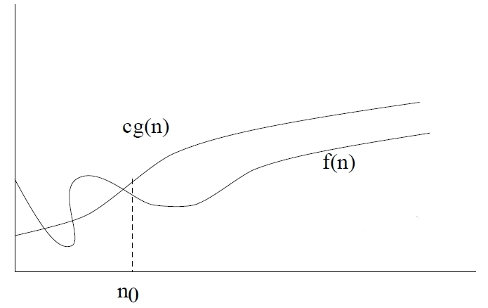
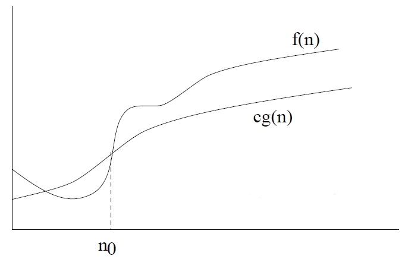
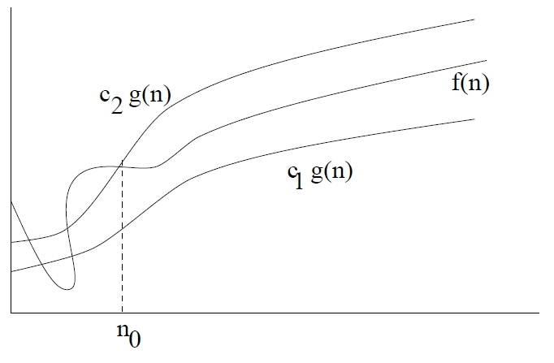

Asymptotic Analysis:
The running time of an algorithm depends upon various characteristics and slight
variation in the characteristics varies the running time. The algorithm efficiency
and performance in comparison to alternate algorithm is best described by the
order of growth of the running time of an algorithm. Suppose one algorithm for a
problem has time complexity as c3n^2 and another algorithm has c1n^3 +c2n^2 then it
can be easily observed that the algorithm with complexity c3n^2 will be faster than
the one with complexity c1n^3 +c2n^2 for sufficiently larger values of n. Whatever be
the value of c1, c2 and c3 there will be an 'n' beyond which the algorithm with
complexity c3n^2 is faster than algorithm with complexity c1n^3 +c2n^2, we refer this
n as breakeven point. It is difficult to measure the correct break even point
analytically, so Asymptotic notation are introduced that describe the algorithm
efficiency and performance in a meaningful way. These notations describe the
behavior of time or space complexity for large instance characteristics. Some
commonly used asymptotic notations are:
Big Oh-notation (O):
The upper bound for the function 'f' is provided by the big
oh notation (O).
Definition: f(n) = O(g(n)) iff there are two
positive constants c and n0 such that
|f(n)| ≤ c |g(n)| for all n ≥ n0
If f(n) is nonnegative, we can simplify the last
condition to
0 ≤ f(n) ≤ c g(n) for all n ≥ n0
We say that "f(n) is big-O of g(n)."
As n increases, f(n) grows no faster than g(n).
In other words, g(n) is an asymptotic upper
bound on f(n).

Big Omega-notation (Ω):
The lower bound for the function 'f' is provided by the
big omega notation (Ω).
Definition: f(n) =
(g(n)) iff there are two
positive constants c and n0 such that
|f(n)| ≥ c |g(n)| for all n ≥ n0
If f(n) is nonnegative, we can simplify the last
condition to
0 ≤ c g(n) ≤ f(n) for all n ≥ n0
We say that "f(n) is omega of g(n)."
As n increases, f(n) grows no slower than g(n).
In other words, g(n) is an asymptotic lower bound
on f(n).

Big-Theta notation(θ):
The tight bound for the function 'f' is
provided by the big theta notation (θ).
Definition: f(n) = θ(g(n)) iff there are three
positive constants c1, c2 and n0 such that
c1|g(n)| ≤ |f(n)| ≤ c2|g(n)| for all n ≥ n0
If f(n) is nonnegative, we can simplify the last
condition to
0 ≤ c1 g(n) ≤ f(n) ≤ c2 g(n) for all n ≥ n0
We say that "f(n) is theta of g(n)"
As n increases, f(n) grows at the same rate as
g(n). In other words, g(n) is an asymptotically
tight bound on f(n).
